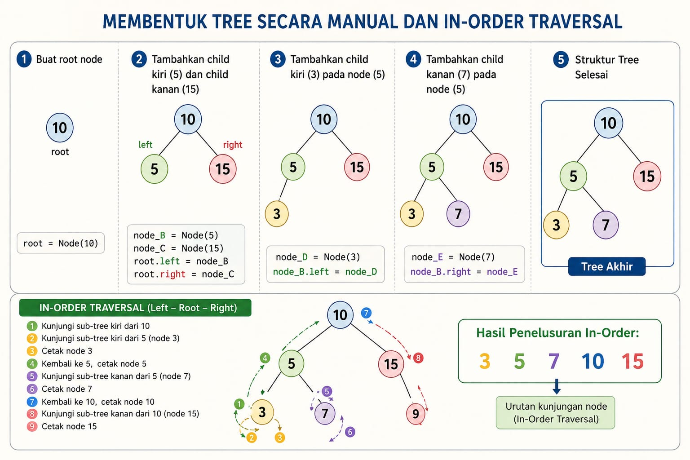

Tree
Tree adalah struktur data non-linear yang digunakan untuk merepresentasikan hubungan hierarki antar elemen. Berbeda dengan Array, Linked List, Stack, atau Queue yang bersifat linear (berurutan satu dimensi), Tree menyimpan data secara bercabang seperti pohon terbalik.
Istilah-Istilah Penting dalam Tree:
Node (Simpul): Wadah yang digunakan untuk menyimpan data.
Root (Akar): Node paling atas yang menjadi awal mula dari Tree. Root tidak memiliki parent.
Parent (Induk): Node yang berada di atas node lain dan terhubung langsung.
Child (Anak): Node turunan yang berada langsung di bawah parent.
Leaf (Daun): Node yang berada di paling bawah dan tidak memiliki child lagi.
Edge (Sisi/Garis): Garis hubung antara parent dan child.
Ilustrasi

Implementasi Python (Binary Tree)
# 1. Definisikan struktur untuk satu Node
class Node:
def __init__(self, data):
self.data = data
self.left = None # Menyimpan pointer ke child kiri
self.right = None # Menyimpan pointer ke child kanan
# 2. Fungsi untuk menampilkan isi tree (In-Order Traversal)
def cetak_in_order(akar):
if akar is not None:
# Kunjungi sub-tree kiri terlebih dahulu
cetak_in_order(akar.left)
# Cetak data pada node saat ini
print(akar.data, end=" ")
# Kunjungi sub-tree kanan
cetak_in_order(akar.right)
# MEMBENTUK STRUKTUR TREE MANUALLY
# Membuat node-node secara manual
root = Node(10)
node_B = Node(5)
node_C = Node(15)
node_D = Node(3)
node_E = Node(7)
# Menyambungkan antar node sesuai hierarki
root.left = node_B # 5 menjadi child kiri dari 10
root.right = node_C # 15 menjadi child kanan dari 10
node_B.left = node_D # 3 menjadi child kiri dari 5
node_B.right = node_E # 7 menjadi child kanan dari 5
# Menampilkan hasil cetakan tree
print("Hasil Penelusuran In-Order:")
cetak_in_order(root)
print()
Penjelasan Kodde :
A. Struktur Node (class Node)
Saat kita menulis root = Node(10), komputer akan menyediakan sebuah kotak memori yang berisi tiga slot:
data: Berisi nilai utamanya (misal: 10).
left: Awalnya bernilai None. Berfungsi seperti tangan kiri yang siap memegang node lain.
right: Awalnya bernilai None. Berfungsi seperti tangan kanan yang siap memegang node lain.
B. Cara Kerja Algoritma cetak_in_order (Rekursif)
Fungsi cetak_in_order menggunakan teknik rekursif (fungsi yang memanggil dirinya sendiri) untuk menelusuri setiap cabang pohon. Aturan dari In-Order adalah: Selesaikan jalur kiri, cetak diri sendiri, lalu selesaikan jalur kanan.
Berikut adalah urutan jalannya algoritma (langkah demi langkah):
Panggilan 1: Fungsi masuk membawa root (Node 10). Karena Node 10 tidak None, program langsung mengeksekusi perintah pertama: cetak_in_order(akar.left), yaitu masuk ke Node 5.
Panggilan 2: Sekarang berada di Node 5. Program kembali mengeksekusi perintah paling atas: masuk ke sub-tree kirinya, yaitu Node 3.
Panggilan 3: Sekarang berada di Node 3. Program mencoba masuk ke sub-tree kirinya (akar.left). Karena kiri dari Node 3 adalah None, panggilan ini langsung selesai (return) tanpa mencetak apa pun.
Kembali ke Panggilan 3: Setelah perintah kiri selesai, program lanjut ke baris berikutnya di Node 3, yaitu print(akar.data). Maka angka 3 dicetak ke layar. Setelah itu, ia memeriksa kanan dari Node 3 (ternyata None, selesai). Node 3 beres sepenuhnya.
Kembali ke Panggilan 2 (Node 5): Karena proses kiri dari Node 5 (yaitu seluruh cakupan Node 3) sudah selesai, program lanjut ke baris berikutnya di Node 5, yaitu print(akar.data). Angka 5 dicetak.
Lanjut di Node 5: Program mengeksekusi perintah kanan, yaitu cetak_in_order(akar.right), masuk ke Node 7. Di Node 7, karena kiri dan kanannya None, ia langsung mencetak angka 7. Proses di Node 5 selesai
Kembali ke Panggilan 1 (Node 10): Jalur kiri dari Node 10 sudah selesai dijelajahi semua. Program lanjut mencetak dirinya sendiri, yaitu angka 10.
Langkah Terakhir: Program mengeksekusi jalur kanan dari Node 10, yaitu masuk ke Node 15. Karena Node 15 tidak memiliki anak (kiri-kanan None), ia langsung mencetak angka 15.
Output Akhir di Layar: 3 5 7 10 15